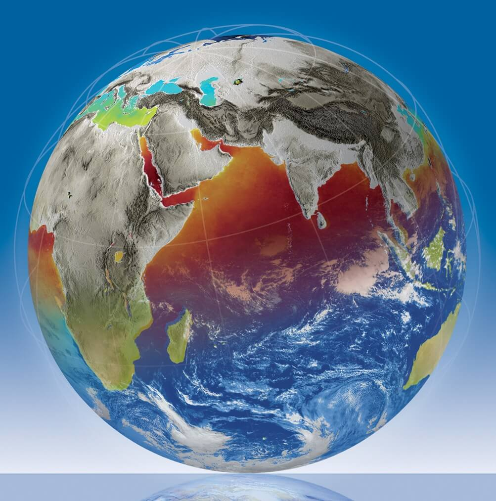
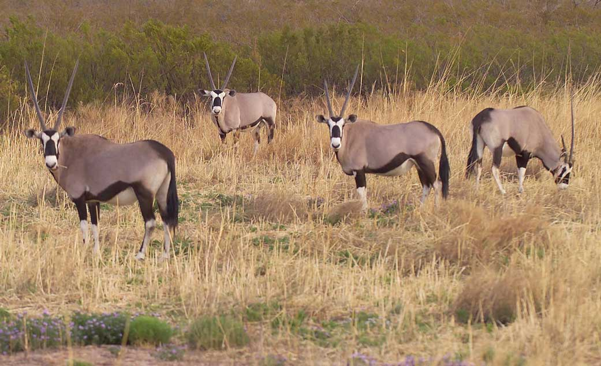
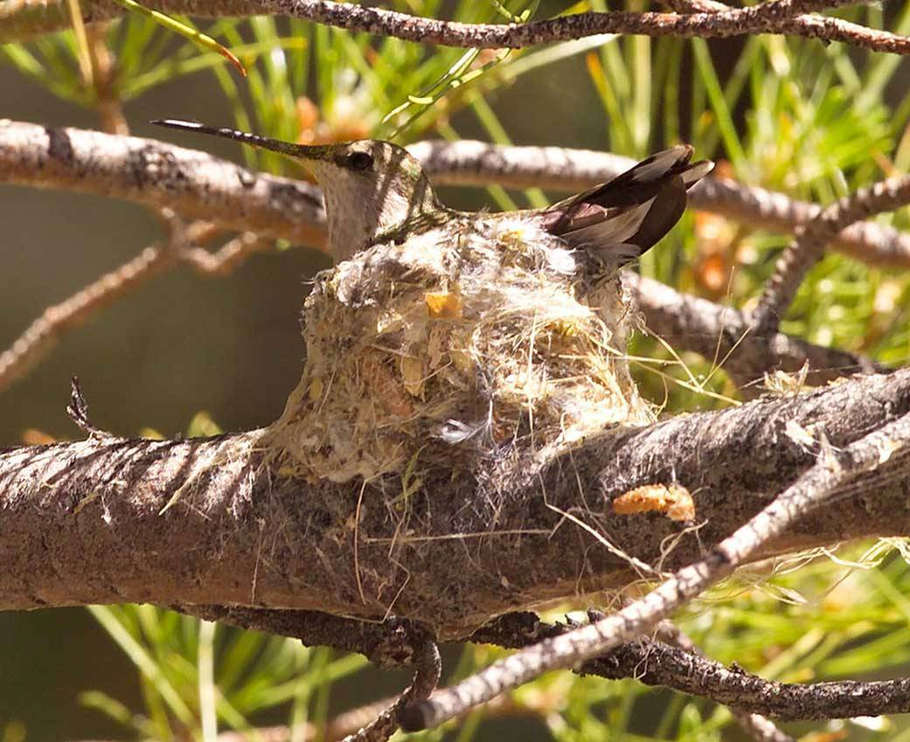

<div class="pages">
  <div data-page="videos" class="page no-toolbar no-navbar">
    <div class="page-content">
    	<div class="navbarpages">
    		<div class="navbar_left">
    			<div class="logo_text"><a href="index.html"><span>Space</span>UP</a></div>
    		</div>			
    		<a href="#" data-panel="left" class="open-panel">
    			<div class="manu-icon"></div>
    		</a>					
    	</div>
      <div id="pages_maincontent">
        <h2 class="page_title">Preventions</h2>

        <div class="page_single layout_fullwidth_padding">
        <h4 style="text-align: center;">Aura data advances the understanding of changes in the Earth's radiation balance, air quality.</h4>
          <div class="vid-place">
            <iframe width="100%" height="auto" src="https://www.youtube.com/embed/LKe5FdKInJs" frameborder="0" allowfullscreen></iframe>
          </div>
          <p>Source:https://aura.gsfc.nasa.gov/airquality.html</p><hr>
        </div>
        <div class="page_single layout_fullwidth_padding">
          <h4 style="text-align: center;">ESA.INT</h4>
          <p style="text-align: center;">The European Space Agency (ESA) is Europe's gateway to space. Its mission is to shape the development of Europe's space capability and ensure that investment in space continues to deliver benefits to the citizens of Europe and the world.</p>
          <h4 style="text-align: center;">Global Change</h4>
          <p>The biggest environmental issue we face is global change, which encompasses not only climate change but also the large-scale impact that a growing global population and continued economic growth are having on the environment.</p>
          
          <p>Earth Explorers provide an important contribution to the global endeavour to further our understanding of Earth.</p>
          <p>Earth Explorer missions form the science and research element of ESA's Living Planet Programme and focus on the atmosphere, biosphere, hydrosphere, cryosphere and Earth's interior.</p>
          <p>However, the emphasis is also on learning more about the interactions between these components and the impact that human activity is having on natural Earth processes...</p>
          <h5>Read more at www.esa.int/ESA</h5>
          <p>Source:http://www.esa.int/ESA</p><hr>
        </div>
       
        <div class="page_single layout_fullwidth_padding">
          <h4 style="text-align: center;">The Antarctic Ozone Hole</h4>
          <p style="text-align: center;">The Antarctic Ozone Hole is an annual springtime event above Earth's frozen, southernmost continent. Man-made CFCs, naturally occurring Polar Stratospheric Clouds, and the return of sunlight set off incredible destruction of the protective Ozone Layer. This video presents these complicated processes with simple to understand animations.</p>
          <div class="vid-place">
            <iframe width="100%" height="auto" src="https://www.youtube.com/embed/RS0Q3WIdosE" frameborder="0" allowfullscreen></iframe>
          </div>
        </div><hr>
        <div class="page_single layout_fullwidth_padding">
          <h4 style="text-align: center;">Environmental Protection</h4>
          
          <p style="text-align: center;">White Sands Test Facility maintains high environmental standards to ensure conservation of our site’s natural environment and the preservation of our cultural resources.</p>
          <h5 style="text-align: center;">Cultural preservation</h5>
          <p>NASA maintains a record of each of the 94 historic and archeological sites found within our boundaries, including artifacts that were found and categorized by the Museum of New Mexico. Several historic properties exist on our site including the Love Ranch, the 200 Preparation Area, and the 300 and 400 Propulsion Test Area historic districts.</p>
          <p>The Love Ranch operated from the early 1900s until 1960 and was owned by Dr. Love and his family until it was acquired by the federal government under a lease agreement. The 2-acre ranch complex’s natural and geological resources are protected under federal law and the area is eligible for listing in the National Register of Historic Places.</p>
          <p>The 200 Area Preparation Area, an individually eligible historic property, and the 300 and 400 Propulsion Test Area historic districts were instrumental in the Apollo (1962-1972) and Space Shuttle (1969-2011) programs. The development, testing, and refurbishment of the propulsion systems used in these eras was completed at our facility.  All three of these areas are eligible for listing in the National Register of Historic Places.</p>
          
          <h5 style="text-align: center;">Ecosystem Protection</h5>
          <p>WSTF’s secure property and remote location provide a protected habitat for plants and animals and we ensure that threatened or endangered species and their habitats are protected during all activities we perform.</p>
          <p>Our site contains over 130 species of cataloged plants and diverse wildlife, including 176 bird species. Of these 130 species, an estimated 21 species are listed as threatened, endangered, or species of concern by the federal government.</p>
          
          <a href="https://www.nasa.gov/centers/wstf/about_us/environmental_management/environmental_protection.html">Source:https://www.nasa.gov/</a><hr>
        </div>
      </div>
    </div>
  </div>
</div>